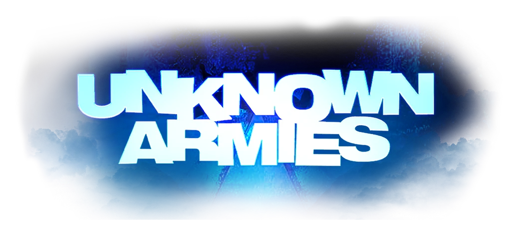

• Жанр: ужасы, комедия
• Сеттинг: городская мистика
• Время: начало Y2K
• Рейтинг: NC-17 (18+)
• Мастеринг: активный, квестовая и эпизодическая система

• Жанр: ужасы, комедия
• Сеттинг: городская мистика
• Время: начало Y2K
• Рейтинг: NC-17 (18+)
• Мастеринг: активный, квестовая и эпизодическая система
«Неизвестные армии» — игра о современном оккультизме, конспирологии и городских легендах. Основная идея сеттинга — «консенсусная реальность»: мир таков, каков он есть, потому что человечество в целом считает, что таковым он и должен быть. С последствиями коллективного бессознательного тебе и предстоит столкнуться.
Стоит лишь немного окунуться во всё это, как со временем начинаешь улавливать суть. Люди нуждаются в принятии важных решений, поэтому они «обнаруживают» новые правила игры и «разоблачают» новые законы вселенной, придавая случайным вещам значимость и магическую силу.
Нумерологией становятся одержимы те, кто хочет влиять на своё будущее, а теориями заговора — те, кто мечтает найти виновника всех бед. В конце концов, всё начинается с ужасной проблемы и сломленного человека, готового на любые безумства ради её исправления.
«Неизвестные армии» — это игра о сломленных людях, которые сговорились починить мир. Они хотят социальной справедливости, возмездия, искупления грехов или просто большого куска пирога. Но никто им этого просто так не даст. Честно говоря, Вселенной на них плевать.
Вместо того чтобы останавливать злобных культистов, убивать монстров или защищать статус-кво, ты и есть культист, монстр или безумец. Твоя задача — создать персонажа, для которого «как обычно» невыносимо.
Для легкого старта ознакомься с общей концепцией мира в Тайные имена улиц и пройди первые шаги по Улицам. Этого достаточно, чтобы создать обычного персонажа с Обычными личностями (которые заменяют класс героя). Если хочется добавить персонажу магии и тайных знаний, нужно идти дальше в Мир и Космос.
Обрати внимание на Прегены – их можно использовать, как они есть, или изменить под себя.
В разделе Анкета по пунктам расписано, как ее заполнять, к ней привязаны личности Адептов, Аватаров и Сверхов для желающих добавить магии, а Правила учат, как использовать личности, как бросают дайсы и как себя вести на игре.
В блоке Сеттинга собрано всё, что нужно для аутентичности. Империя Блайти описывает менталитет британцев и региональные стереотипы, История подана в нарезках комедийного сериала “Cunk on Britain” и, наконец, Группы – это фракции, ковены и союзы оккультистов, к которым твой персонаж может принадлежать.
Существует пять способов уничтожить мир: Пути адептов, Архетипы аватаров, Сточная магия, Ритуалы и Артефакты. Большинство из них требуют привязки к определенной личности.